ThoughtTrace pairs each conversation with rich demographic and usage metadata, reflecting a diverse spectrum of AI users and everyday use cases consistent with the profile of frequent real-world AI users.
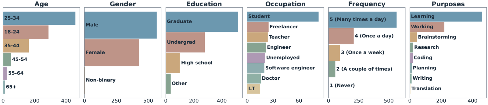
1Johns Hopkins University · 2Massachusetts Institute of Technology · 3Google Research
Conversational AI has reached billions of users, yet existing datasets capture only what people say, not what they think. We introduce ThoughtTrace, the first large-scale dataset that pairs real-world multi-turn human–AI conversations with users' self-reported thoughts: their reasons for sending prompts and reactions to assistant responses.
Our analysis shows that ThoughtTrace captures long-horizon, topically diverse interactions, and that thoughts are semantically distinct from messages, difficult for frontier LLMs to infer from context, and tied to conversation stages. Thoughts also provide actionable signals for user-behavior prediction (+41.7% relative gain) and model alignment (+25.6% win rate).
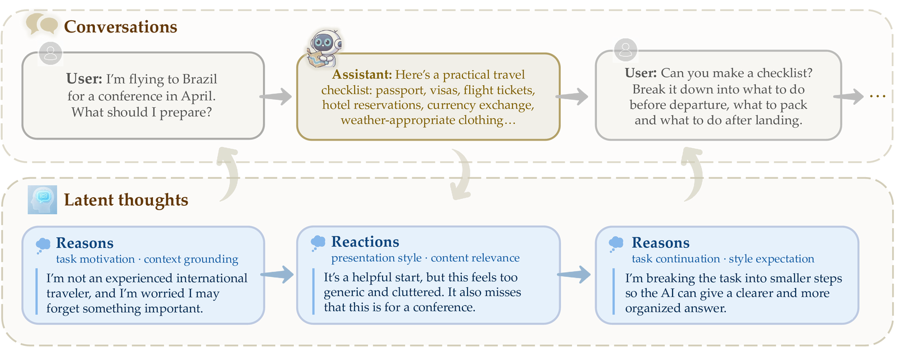
Three properties describe who uses ThoughtTrace and how their conversations unfold.
ThoughtTrace pairs each conversation with rich demographic and usage metadata, reflecting a diverse spectrum of AI users and everyday use cases consistent with the profile of frequent real-world AI users.

ThoughtTrace features high-quality, long-horizon conversations with a median of 8 turns (compared to 2 in both WildChat and LMSYS-Chat-1M), and spans seven broad topic categories and 36 fine-grained subtopics with no single category dominating.
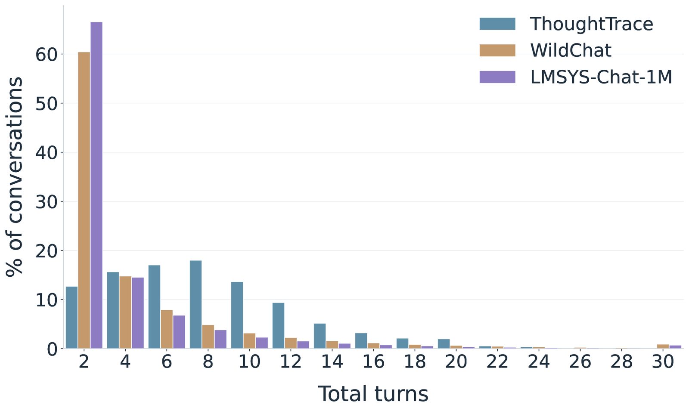
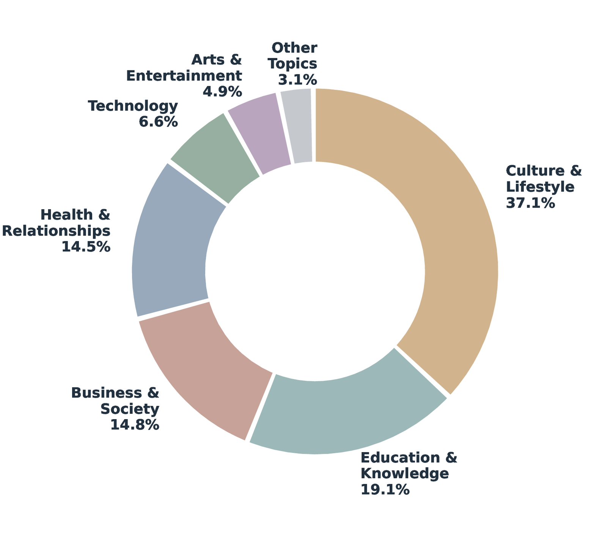
Extending, deepening, or building on the prior task accounts for 57.0% of user turns, far outpacing new requests, re-attempts, and variations — and this extension pattern strengthens as conversations progress.
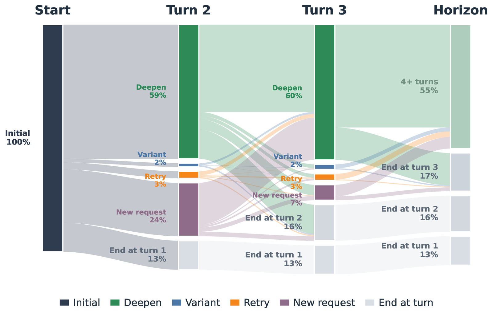
Four properties show why thoughts are a distinct, complementary modality beyond conversation transcripts.
Thoughts capture substantial latent information not directly verbalized in conversation, as shown by both embedding-level shifts and LLM-based semantic coverage scoring — supporting their value as a distinct and complementary signal for understanding user behavior.
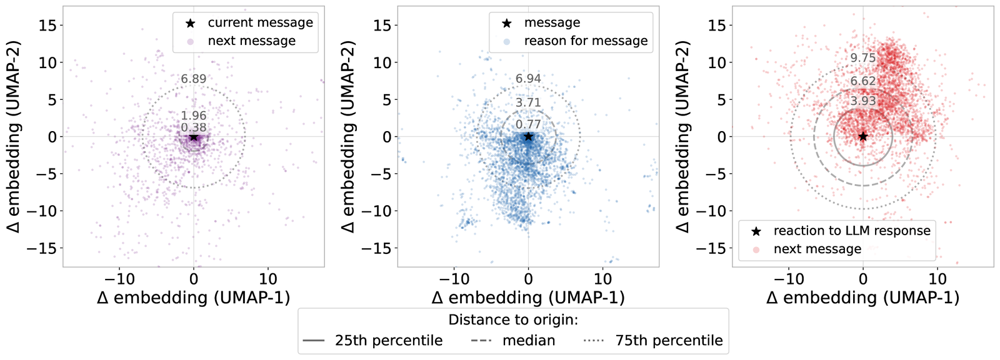
Thoughts are consistently difficult for three frontier language models (GPT, Gemini, Claude) to infer from context — mean semantic similarity scores of 2.93 for reasons and 2.54 for reactions (1–5 scale), underscoring the value of explicit thought annotations in ThoughtTrace.
Thoughts in ThoughtTrace span seven reason categories and five reaction categories, capturing a diverse set of unspoken contexts that range from high-level motivations and grounding details to targeted sources of dissatisfaction.
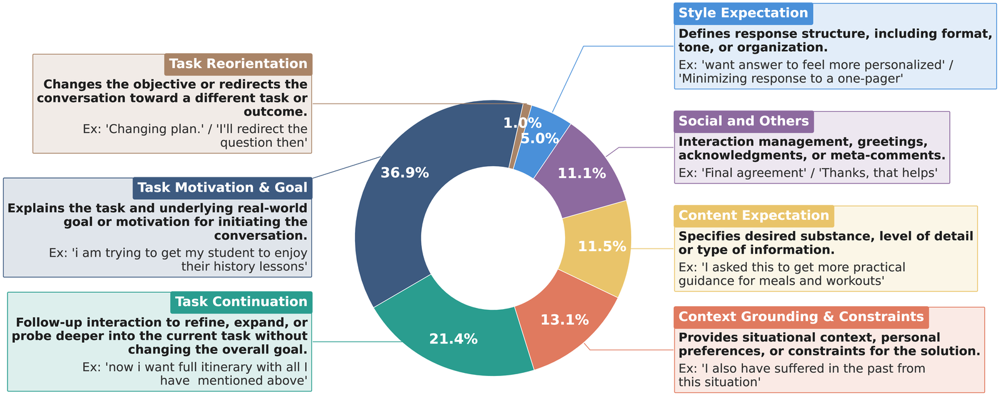
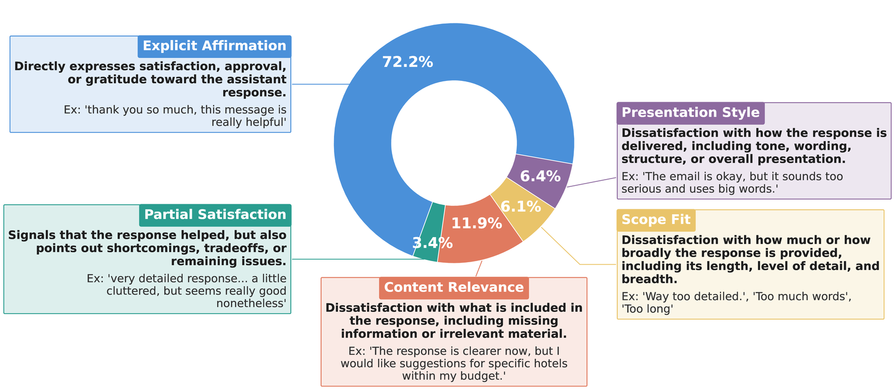
Thought dynamics depend on conversation stages and multi-turn relationships between messages, while remaining largely independent of conversation topics or length. Task Motivation dominates early turns; Task Continuation takes over later; and Explicit Affirmation steadily rises as conversations converge.
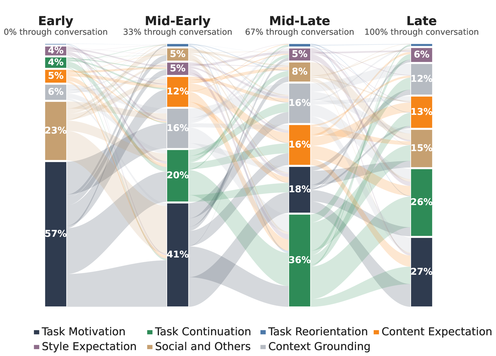
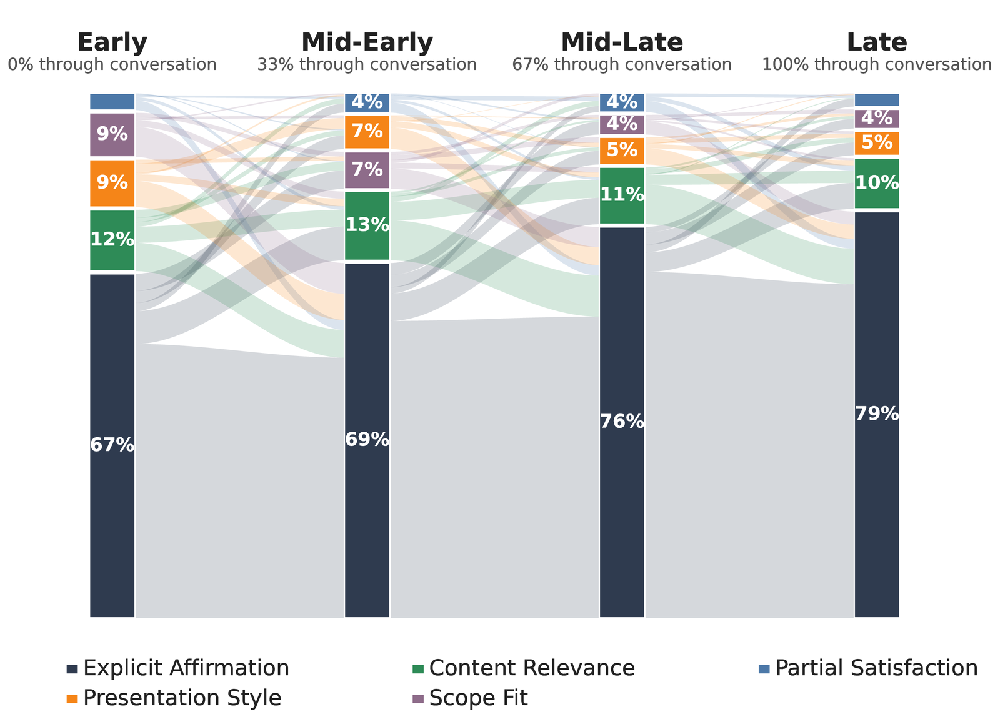
As a first step, we present two case studies demonstrating the downstream value of thoughts.
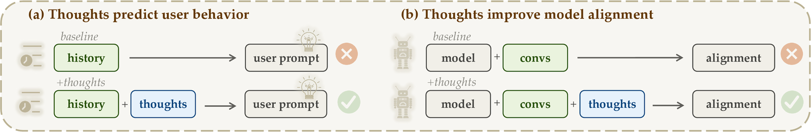
Access to thought annotations substantially improves next-user-message prediction across three frontier models, raising the average prediction semantic similarity from 21.6 → 30.6 (a 41.7% relative gain). This points toward user simulators that jointly predict thoughts and messages.
| Method | GPT | Gemini | Opus | Avg. |
|---|---|---|---|---|
| History-only | 21.4 | 22.1 | 21.3 | 21.6 |
| Thought-augmented | 27.4 | 28.9 | 35.5 | 30.6 |
Table 1 | User message prediction results. Three frontier models are evaluated with and without access to annotated thoughts at inference time.
Thought-guided rewrites outperform message-guided rewrites by +4.5% on Arena-Hard, exceed the base model by +25.6%, and WildChat baseline by +6.6%, indicating thoughts capture richer dissatisfaction and revision signals than users explicitly articulate in messages.
| Method | Win | SC Win |
|---|---|---|
| Qwen3.5-4B | 24.6 | 22.5 |
| WildChat | 41.8 | 41.5 |
| ThoughtTrace (messages) | 44.0 | 43.6 |
| ThoughtTrace (thoughts) | 47.9 | 48.1 |
Table 2 | Model alignment results on Arena-Hard. Win rate (%) and style-controlled win rate (%) are reported for each training configuration.
ThoughtTrace opens several directions for future research.
ThoughtTrace enables systematic study of the dynamic human mental processes that arise in human–AI interaction: what users think during conversations, how conversational context shapes these thoughts, how thoughts subsequently shape user utterances, and how these dynamics vary across demographic groups.
User thoughts provide a new supervisory signal that models can predict, learn from, and align with, offering a path toward assistants that better capture users' latent goals, expectations, and reactions.
ThoughtTrace enables benchmarks for thought prediction and supports thought-centered measures of user satisfaction, moving evaluation beyond surface-level utterances toward latent intent and subjective experience.
@article{jin2026thoughttrace,
title = {ThoughtTrace: Understanding User Thoughts in Real-World LLM Interactions},
author = {Jin, Chuanyang and Li, Binze and Xie, Haopeng and Fang, Cathy Mengying and
Li, Tianjian and Longpre, Shayne and Gu, Hongxiang and
Chen, Maximillian and Shu, Tianmin},
year = {2026},
url = {https://thoughttrace-project.github.io/}
}